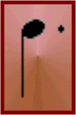

El puntillo es un signo de prolongación que nos sirve para aumentar el valor(duración) de las notas. Es un punto que colocado a la derecha de la nota aumentará la mitad de su valor. Es decir que si va a la derecha de una Redonda (4 tiempos) su valor total será de 6 tiempos (4 + 2)
Redonda con puntillo 4 + 2 tiempo
Blanca con puntillo 2 + 1 tiempo
Negra con Puntillo 1 + 1/2 tiempo
Corchea con puntillo 1/2 + 1/4 tiempo
Semicorchea
con puntillo 1/4 + 1/8 tiempo
Fusa
con puntillo 1/16 +
1/32 tiempo
Semifusa
con puntillo 1/32 + 1/64
tiempo